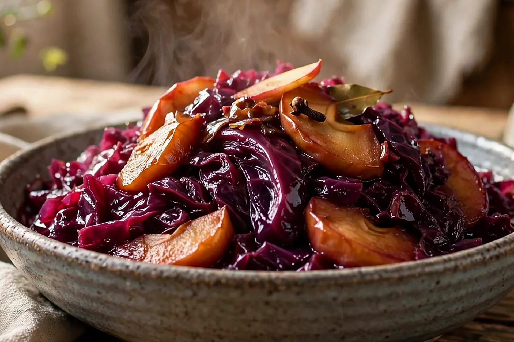

Rotkohl (Braised Red Cabbage with Apple)
Red cabbage belongs to every festive roast at our house. With grated apple, a splash of vinegar and plenty of time in the pot, it turns tender, glossy and beautifully balanced between sweet and sour.

Contents
Ingredients
Instructions
- Quarter the cabbage, cut out the core and slice the quarters into fine shreds.
- Heat the clarified butter in a large pot and sweat the onion until translucent. Add the cabbage and grated apple and cook briefly.
- Pour in the vinegar and the water or apple juice. Add the sugar, salt, bay leaves and cloves and mix everything well.
- Cover and braise gently over low to medium heat for 40–45 minutes, stirring now and then. Add a little more liquid if needed.
- Remove the bay leaves and cloves. Season with vinegar, sugar and salt, and stir in the redcurrant jelly if you like – it gives a lovely shine.

Tip
Add the vinegar right at the start: it keeps the bright red color. Red cabbage tastes even better reheated the next day and freezes very well.
📌 Find more recipe ideas on our Pinterest profile:
Lecker Rezepte on Pinterest
Lecker Rezepte on Pinterest